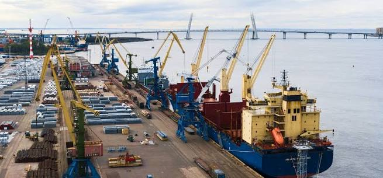
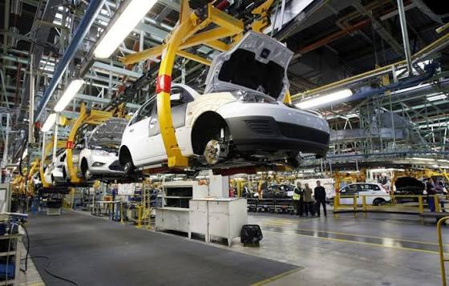
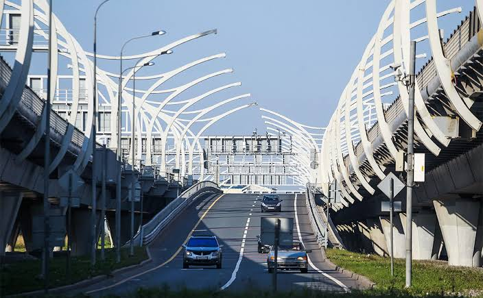
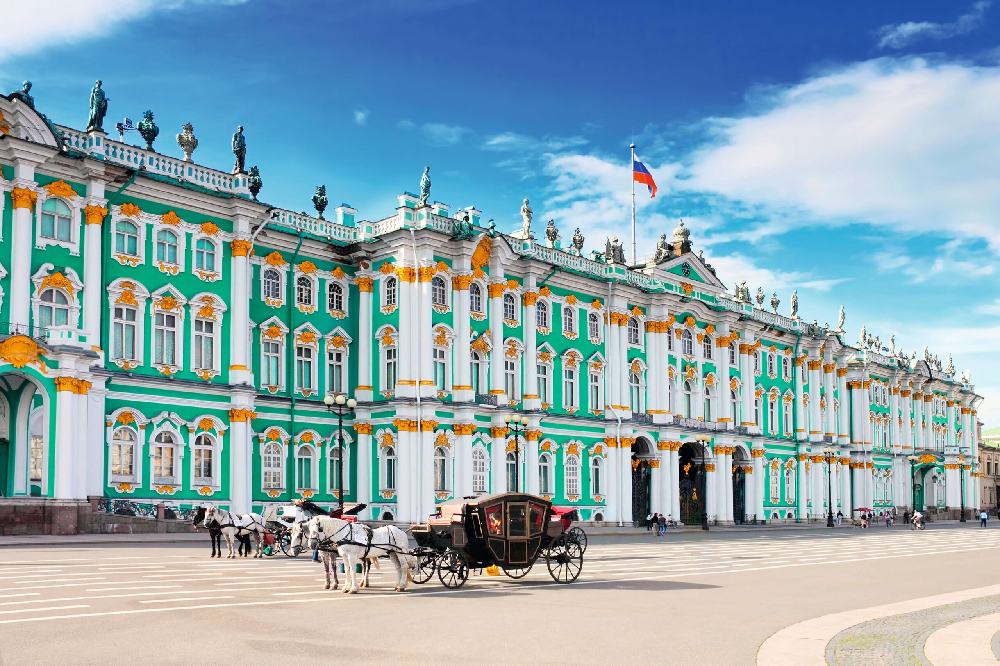
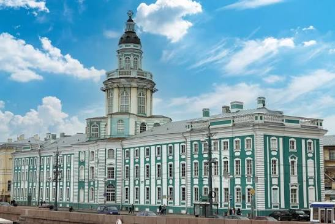
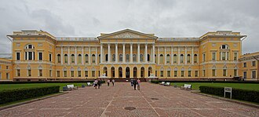

Санкт-Петербург
Экономика
Экономика Санкт-Петербурга — вторая по величине городская экономика России
Промышленность
- Судостроение
- Машиностроение и энергомашиностроение
- Фармацевтика и инженерия
Транспорт и логистика
- Морской порт
- Ж/Д
- СЗД и КАД



Источник
Культура
Санкт-Петербург — признанная культурная столица России
Музеи мирового масштаба
- Государственный Эрмитаж
- Государственный Русский музей
- Кунсткамера



Театры
- Мариинский театр
- Александринский театр
Туризм
Туризм в Санкт-Петербурге — один из ключевых драйверов городской экономики
Виды туризма
- Культурно-познавательный
- Семейный туризм
- Событийный туризм...